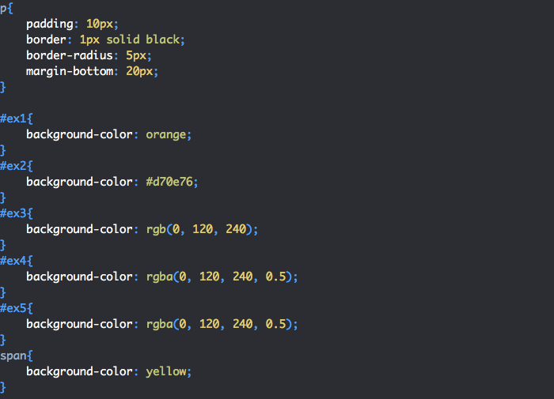

Cascading Style Sheets (CSS) is a stylesheet language used to describe the presentation of a document written in HTML or XML (including XML dialects such as SVG, MathML or XHTML). CSS describes how elements should be rendered on screen, on paper, in speech, or on other media.
1) Faster Page Speed. More code means slower page speed. ... 2) Better User Experience. CSS not only makes web pages easy on the eye, it also allows for user-friendly formatting. ... 3) Quicker Development Time. ... 4) Easy Formatting Changes. ... 5) Compatibility Across Devices.
The main benefit of CSS is that style is applied consistently across a number of web pages. One command line can control several areas at one time, which is quite advantageous if there are changes that need to be made. You only need to alter one thing and the rest will follow. Because you don't have to change each page one at a time, web designers can be very efficient in creating and changing a website with only a few lines of code.

Confusion due to many CSS levels. Beginners are more vulnerable to this issue. ... Cross-Browser Issues. Different browsers work differently. ... Security Issues. Security is important in today's world driven by technology and data. ... Extra Work for Developers.
1. Come in different levels:-
There's CSS, CSS 1 up to CSS3, which has resulted in confusion among developers and web browsers. One type of
CSS should be enough. It would be preferable than having to choose which CSS level to
2. Fragmentation:-
With CSS, what works with one browser may not always work with another. This is why web developers have to test
for compatibility, running the program across multiple browsers before a website is set live. If only people use
Mozilla or Chrome, but they don'
3. Lack of security:-
Because it is an open text-based system, CSS doesn't have the built-in security that will protect it from being
overridden. Anyone who has a read/write access to a website can change the CSS file, alter the links or disrupt
the formatting, whether by accident or design.

The biggest difference between CSS2 and CSS3 is that CSS3 is now split into different modules. Since each module makes its way through the W3C individually, there's a wider range of browser support. Make sure you test your CSS3 pages in as many browsers and operating systems as possible to ensure compatibility
The main difference between CSS and CSS3 is that CSS3 has modules.CSS is the basic version and it does not support responsive design.
Multiple Backgrounds:-
Background-image, background-position and background-repeat can now be used to specify multiple background
images to be layered on top of one another. The first image is closest to the user, with the following image
layered behind. If there is a background color, it's painted below all the image layers.
#example:-1 {
background-image: url(sheep.png), url(betweengrassandsky.png);
background-position: center bottom, left top;
background-repeat: no-repeat;
background-color:red
}

At its most basic level, CSS consists of two components:-
1) Properties: These are human-readable
identifiers
that indicate which stylistic features you want to modify. For example, font-size , width , background-color.
2) Values: Each property is assigned a value. This value indicates how to style the property.
The components of css style are:
1)Selecter:HTML element name, id name, class name.
2)Property:It's
like an
attribute such as background color,font-size ..

The opacity CSS property sets the opacity of an element. Opacity is the degree to which content behind an element is hidden, and is the opposite of transparency
The CSS opacity property is used to specify the transparency of an element. In simple word, you can say that it specifies the clarity of the image.
A < number> in the range 0.0 to 1.0, inclusive, or a < percentage> in the range 0% to 100%, inclusive, representing the opacity of the channel (that is, the value of its alpha channel). Any value outside the interval, though valid, is clamped to the nearest limit in the range.
opacity applies to the element as a whole, including its contents, even though the value is not inherited by
child elements. Thus, the element and its children all have the same opacity relative to the element's
background, even if they have different opacities relative to one another.
Using opacity with a value other than 1 places the element in a new stacking context.
To change the opacity of a background only, use the background property with a color value that allows for an
alpha channel.

To add background color in HTML, use the CSS background-color property. Set it to the color name or code you want and place it inside a style attribute. Then add this style attribute to an HTML element, like a table, heading, div, or span tag
To change the background color of an element in CSS, use the background-color property.
The use of color is a fundamental form of human expression. Children experiment with color before they even have the manual dexterity to draw. Maybe that's why color is one of the first things people often want to experiment with when learning to develop websites. With CSS, there are lots of ways to add color to your HTML elements to create just the look you want.
To control the repetition of an image in the background, use the background-repeat property. You can use no-repeat value for the background-repeat property if you do not want to repeat an image, in this case, the image will display only once.
The background-repeat CSS property sets how background images are repeated. A background image can be repeated along the horizontal and vertical axes, or not repeated at all.
By default, the repeated images are clipped to the size of the element, but they can be scaled to fit (using round) or evenly distributed from end to end (using space).
Keyword values:-
background-repeat: repeat-x;
background-repeat: repeat-y;
background-repeat: repeat;
background-repeat: space;
background-repeat: round;
background-repeat: no-repeat;
Two-value syntax: horizontal | vertical
background-repeat: repeat space;
background-repeat: repeat repeat;
background-repeat: round space;
background-repeat: no-repeat round;
Global values:-
background-repeat: inherit;
background-repeat: initial;
background-repeat: revert;
background-repeat: revert-layer;
background-repeat: unset;
The background-position property sets the starting position of a background image. Tip: By default, a background-image is placed at the top-left corner of an element, and repeated both vertically and horizontally.
The background-position property in CSS is mainly used to sets the initial position for the background image
The background-position CSS property sets the initial position for each background image. The position is relative to the position layer set by background-origin.
The background-position property is specified as one or more < position> values, separated by commas.
Keyword values:-
background-position: top;
background-position: bottom;
background-position: left;
background-position: right;
background-position: center;
< percentage> values:-
background-position: 25% 75%;
< length> values:-
background-position: 0 0;
background-position: 1cm 2cm;
background-position: 10ch 8em;
Multiple images:-
background-position: 0 0, center;
Edge offsets values:-
background-position: bottom 10px right 20px;
background-position: right 3em bottom 10px;
background-position: bottom 10px right;
background-position: top right 10px;
Global values:-
background-position: inherit;
background-position: initial;
background-position: revert;
background-position: revert-layer;
background-position: unset;

background-attachment property:-
The background-attachment property sets whether a background image scrolls with the rest of the page, or is
fixed.
The background-attachment CSS property sets whether a background image's position is fixed within the viewport, or scrolls with its containing block.
Keyword values:-
background-attachment: scroll;
background-attachment: fixed;
background-attachment: local;
Global values:-
background-attachment: inherit;
background-attachment: initial;
background-attachment: revert;
background-attachment: revert-layer;
background-attachment: unset;
There are two reasons behind this:-
It enhances the legibility of style sheets. The background property is a
complex property in CSS, and if it is combined with color, the complexity will further increase.
There are serveral reasons for this. First, style sheets become more legible -- both for humans and machines. The background property is already the most complex property in CSS1 and combining it with color would make it even more complex. Second, color inherits, but background doesn't and this would be a source of confusion.
Center block elements using margin property: We need to specify the margin from left and right such that it looks centered. We do not need to do this manually, we have one property value “auto” which will automatically set the margin such that our block element is placed in the center.
There are two steps to center a block-level element:-
Step 1: Define the external width:- We need to define the external width. Block-level elements have the default
width of 100% of the webpage, so for centering the block element, we need space around it. So for generating the
space, we are giving it a width.
Step 2: Set the left-margin and the right-margin of the element to auto:- Since we produced a remaining space by
providing external width so now we need to align that space properly that's why we should use margin property.
Margin is a property that tells how to align a remaining space. So for centering the element you must set
left-margin to auto and right-margin to auto.
To center one box inside another we make the containing box a flex container. Then set align-items to center to perform centering on the block axis, and justify-content to center to perform centering on the inline axis.
In the future we may be able to center elements without needing to turn the parent into a flex container, as the Box Alignment properties used here are specified to apply to block layout too. However, support is currently limited for box alignment properties on block layout, so currently centering using Flexbox is the most robust way to achieve this.
.container {
height: 200px;
display: flex;
align-items: center;
justify-content: center;
}
.item {
width: 10em;
}
< div class="container">
< div class="item">I am centered!< /div>
< /div>

The CSS Specification is no different but with a different approach with the advent of CSS3.
The Specification defines how CSS properties should be implemented by browser vendors along with detailed
algorithms, code samples and tabular information.
The Specification also include:-
The syntax and data types of the language
Detailed explanation on CSS Selectors
How you can assign values to properties
The Cascade (the "C" in CSS)
How inheritance works
The Box Model e.t.c
Explanation on some of these topic are short and easy to understand while others are explained in great detail.
The Specification also specify how stylesheets can be included in your web document and how to target specific
media e.g print or screen.
The CSS Specification prior to CSS3 was a single Specification, CSS3 on the other hand is divided into Modules
which are Independent Specifications that can be worked on by different author(s) at different paces, that's why
we have Selector Level 3 Specification, CSS Color 4, CSS Backgrounds and so on. Some of these modules are
revisions of CSS2.1, and some are newly created, but all fall under the banner of CSS3.
The Specification should be your guide if you need to understand how a specific property or feature works behind
the scene and how it works with other CSS properties. And if you are comfortable reading algorithms you won't
get bored reading the CSS Specification.
The Specifications can be accessed online along with the author(s) name and when its was last updated.
Take your time and familiarize yourself with the Specification because we will be making heavy use of it in the
topic: CSS Selectors.
CSS can be added to HTML documents in 3 ways:-
1. Inline - by using the style attribute inside HTML elements.
2. Internal - by using a style> element in the head > section.
3. External - by using a < link> element to link to an external CSS file.


CSS stylesheets can be applied to an HTML document in 3 ways:-
inline styles, embedded stylesheet, and
external
stylesheet. Embedded Stylesheet: It allows you to define styles for a particular HTML document as a whole in one
place.
The HTML element specifies relationships between the current document and an external resource. This element is most commonly used to link to stylesheets, but is also used to establish site icons (both "favicon" style icons and icons for the home screen and apps on mobile devices) among other things.
< link href="/media/examples/link-element-example.css" rel="stylesheet">
< p>This text will be red as defined in the external stylesheet.< /p>
< p style="color: red">The < code>style< /code> attribute can override it, though.< /p>
An external style sheet is a separate CSS file that can be accessed by creating a link within the head section of the webpage. Multiple webpages can use the same link to access the stylesheet. The link to an external style sheet is placed within the head section of the page.
The external style sheet is generally used when you want to make changes on multiple pages. It is ideal for this condition because it facilitates you to change the look of the entire web site by changing just one file.
It uses the < link> tag on every pages and the < link> tag should be put inside the head section.
Example:-
< head>
< link rel="stylesheet" type="text/css" href="mystyle.css">
< /head>

With the help of External Style Sheets, the styles of numerous documents can be organized from one single file. In External Style Sheets, Classes can be made for use on numerous HTML element types in many forms of the site. In complex contexts, Methods like selector and grouping can be implemented to apply styles
The advantages of External Style Sheets are as follows:-
1) With the help of External Style Sheets, the styles of numerous documents can be organized from one single
file.
2) In External Style Sheets, Classes can be made for use on numerous HTML element types in many forms of the
site.
3) In complex contexts, Methods like selector and grouping can be implemented to apply styles.

A CSS selector is the first part of a CSS Rule. It is a pattern of elements and other terms that tell the browser which HTML elements should be selected to have the CSS property values inside the rule applied to them.
CSS selectors are used to "find" (or select) the HTML elements you want to style.
We can divide CSS selectors into five categories:-
1) Simple selectors (select elements based on name, id, class)
2) Combinator selectors (select elements based on a specific relationship between them)
3) Pseudo-class selectors (select elements based on a certain state)
4) Pseudo-elements selectors (select and style a part of an element)
5) Attribute selectors (select elements based on an attribute or attribute value

CSS 2.1 defines the following media groups:-
continuous or paged.
visual, audio, speech, or tactile.
grid (for character grid devices), or bitmap.
interactive (for devices that allow user interaction), or static (for those that do not).
all (includes all media types)
The @media CSS at-rule can be used to apply part of a style sheet based on the result of one or more media queries. With it, you specify a media query and a block of CSS to apply to the document if and only if the media query matches the device on which the content is being used.
If style sheets could only apply a declaration to each element of a Web page, they would be pretty useless. The
real goal is to apply different declarations to different parts of the document.
CSS allows this by associating conditions with declarations blocks. Each (valid) declaration block is preceded
by one or more comma-separated selectors, which are conditions selecting some elements of the page. A selector
group and an associated declarations block, together, are called a ruleset, or often a rule.
A collection of rules or signatures that network traffic or system activity is compared against to determine an action to take—such as forwarding or rejecting a packet, creating an alert, or allowing a system event.
A CSS ruleset (or rule) is visualized in the diagram below.

Create a new layout:-
1) In the Project window, click the module you want to add a layout to.
2) In the main menu, select File > New > XML > Layout XML File.
3) In the dialog that appears, provide the filename, the root layout tag, and the source set where the layout
belongs.
4) Click Finish to create the layout.
CSS page layout techniques allow us to take elements contained in a web page and control where they're positioned
relative to the following factors: their default position in normal layout flow, the other elements around them,
their parent container, and the main viewport/window.
The page layout techniques we'll be covering in more
detail in this module are:-
1) Normal flow
2) The display property
3) Flexbox
4) Grid
5) Floats
6) Positioning
7) Table layout
8) Multiple-column layout
Each technique has its uses, advantages, and disadvantages. No technique is designed to be used in isolation. By
understanding what each layout method is designed for you'll be in a good position to understand which method is
most appropriate for each task.
This is a wider card with supporting text below as a natural lead in to additional content. This content is a litle bit longer
This is a wider card with supporting text below as a natural lead in to additional content. This content is a litle bit longer
This is a wider card with supporting text below as a natural lead in to additional content. This content is a litle bit longer